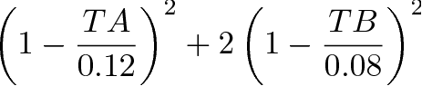

This specification defines an XML markup vocabulary for describing aerodynamic shape optimization problems. The specification evolved from our experience with gradient and gradient-free optimization methods in computational aerodynamics, including loosely-coupled multidisciplinary optimization and variable-fidelity approaches. The goal is a simple and terse vocabulary to define design variables, objective functions and constraints, as well as a flexible interface to exchange data between different software modules of optimization frameworks.
The specification is divided into two sections. The first section presents the basic markup elements that specify optimization problems. These include the design variables, e.g. shape of the geometry or freestream conditions, and the objective and contraints, which can be specified as symbolic expressions. The second section presents the framework markup. These are elements that are specific to various software modules of optimization frameworks, such as geometry generation and flow solution. Taken together, the basic and module-specific elements provide a design database at each iteration of the optimization.
The style of XDDM is similar to the SVG specification, e.g. our preference is to use attributes when specifying atomic Name="Value" pairs. The basic style of all elements and attributes is to start each tag with a capital letter followed by lower case and if the tag consists of multiple words we capitalize the starting letter of each word. The syntax is compatible with most XML parsers. We prefer XPath and use implementations in libxml2, Perl (XML::LibXML), Java and Python.
Tips are displayed if you "mouse-over" gray keywords. Examples using XDDM are provided in $CART3D/cases/samples_design.
The element Variable denotes a parameter that is a design variable. This can be any driving parameter used in the optimization, e.g. a shape control parameter or angle of attack.
Typical usage involves the user specifying this element at the start of the optimization. Thereafter, the Value attribute is modified by the optimizer.
<Variable ID="twist" Value="1." Min="-5" Max="5" TypicalSize="1" Comment="tip twist"/>
The element Constant denotes a parameter that is fixed, i.e. constant throughout the optimization process.
This element has the same attributes as the Variable element, but Min, Max and TypicalSize are ignored. This element is provided for convenience so that users can easily add or freeze design variables without manipulating multiple files.
<Constant ID="alpha" Value="2" Comment="angle of attack"/>
The element Analysis denotes a driven parameter evaluated by an application within the optimization framework, e.g. airfoil thickness output by a geometry modeler or aerodynamic coefficients output by a CFD solver. This element usually depends on the values of the design variables, as well as other parameters. Its Value attribute is filled-in whenever the application executes and is usually used downstream to formulate derived quantities, e.g. objectives and constraints.
This element holds the derivative values of the analysis parameter with respect to design variables (array of doubles). If sensitivities are not requested, then this element is omitted. Each entry has the following syntax:
This tag marks the analysis element as an aerodynamic output of Cart3D. It is a text node. Its content is the same output functional syntax as is used in Cart3D's $__Design_Info input.
| Keyword | Meaning |
|---|---|
| GradientAll | When used with adaptive mesh refinement, the gradient is computed on all meshes of the adaptation run. This generates grad_con_ID.dat files that contain mesh convergence history of the gradient. |
| GradientBM1 | When used with adaptive mesh refinement, the gradient is computed only on the penultimate mesh. While not as accurate as a gradient on the finest mesh, it avoids an adjoint solution on the finest mesh, thereby shortening design-cycle time. This usually works well in early design cycles. |
| Adapt | Functional that drives the adaptation. Implies error computation up to and including the penultimate mesh. Only one AeroFun element can be marked with Adapt. |
| Error | Error computation up to and including the penultimate mesh. No influence on mesh adaptation, but important for assessing if the mesh is good enough for the functional. Generates both fun_con.dat and results.dat files. |
| ErrorAll | Similar to Error, but error computation is done on all meshes, including the finest mesh. Generates both fun_con.dat and results.dat files. |
Analysis request, i.e., on input:
<Analysis ID="7" Sensitivity="Required" Comment="volume"/>
On output, the Value attribute and, if required, the SensitivityArray element, are filled-in:
<Analysis ID="7" Sensitivity="Required" Value="6.0" Comment="volume">
<SensitivityArray>
<Sensitivity P="span" Value="3."/>
</SensitivityArray>
</Analysis>
Analysis parameter for drag coefficient:
<Analysis ID="drag" Sensitivity="Required">
<AeroFun>
# Force Codes: CD=0 Cy=1 CL=2 in Aerodynamic Frame
# Name Force Frame J N Target Weight Bound GMP Comp
# (String) (0,1,2) (0,1) (0,1) (int) (dble) (dble) (-1,0,1)
optForce CD 0 0 0 1 0. 1.0 0 entire
</AeroFun>
</Analysis>
The element Function allows users to define expressions with any of Constant , Variable and Analysis elements as arguments. The function is specified as a symbolic expression. If sensitivities are required then the expression is symbolically differentiated.
Here is an example involving various functions:
<Configure Sensitivity="Required"/> <Variable ID="x" Value="1."/> <Variable ID="y" Value="2."/> <Constant ID="z" Value="3."/> <Analysis ID="t" Value="4."> <SensitivityArray> <Sensitivity P="x" Value="1."/> <Sensitivity P="y" Value="2."/> </SensitivityArray> </Analysis> <Analysis ID="u" Value="-1."> <SensitivityArray> <Sensitivity P="x" Value="3."/> <Sensitivity P="y" Value="4."/> </SensitivityArray> </Analysis> <Function ID="F1" Expr="0"/> <Function ID="F2" Expr="x+1"/> <Function ID="F3" Expr="u"/> <Function ID="F4" Expr="t*y"/> <Function ID="F5" Expr="t*u/x + y"/> <Function ID="F6" Expr="z"/> <Function ID="F7" Expr="x*y*z+10."/> <Function ID="F8" Expr="u^-2"/> <Function ID="F9" Expr="t^2/u^2"/> <Function ID="F10" Expr="sin(PI*x)"/>
The example also shows a Configure element that requests sensitivity analysis for all functions (saves you having to type this for every function). Click here for more examples of functions and details about the scope of Variables, Constants and Analysis elements.
The element Sum is a short-hand for a frequently used Function element. It defines a composite scalar function, where an algebraic expression is applied over a set of Constant, Variable or Analysis parameters. Put another way, this element is a foreach loop over selected parameters. We find that in many instances we need to apply the same algebraic expression to many Analysis parameters, e.g. when assembling penalty terms.
As a first example, consider the following function:

where TA and TB are Analysis parameters. This function is an example of a quadratic penalty constraint that we use to enforce airfoil thicknesses. The parameters TA and TB are the airfoil thicknesses (at two chord locations) with target values of 12% and 8%, respectively. We wish to emphasize the TB term; we therefore double the weight of the second term. The syntax for this sum is given by:
<Sum ID="S1" P="TA,TB" T="0.12,0.08" W="1.,2." Expr="W*(1-P/T)^2"/>
As a second example, we demonstrate the use of the Min attribute. Consider the following function specification:
<Sum ID="S2" P="volume" T="5." Min="5." Expr="(P-T)^2" Sensitivity="Required"/>
We use the Min and Max attributes to specify one-sided constraints. For example, an optimization goal may be to minimize drag of a body subject to a minimum volume requirement. Hence, any volume greater than or equal to the minimum volume is satisfactory. We create the desired function by the use of the Min attribute as shown above. If the Value of the volume parameter is greater than Min then the Min value is used in the expression, i.e. P := min(P, 5). Therefore, Expr would evaluate to zero for volumes greater than 5. Similarly, the user would use Max for one-sided constraints from below. In this case, if the Value of the parameter is less than Max then the Max value is used in the expression, i.e. P := max(P, Max). The purpose of these Min and Max attributes is similar to the ones defined for design variables, except that in the design variable context they define the feasible design region ("must-not-exceed-value"). After processing, a typical filled-in element is shown below:
<Sum ID="S2" P="volume" T="5." Min="5." Expr="(P-T)^2" Value="0"
Sensitivity="Required">
<SensitivityArray>
<Sensitivity P="30" Value="0"/>
<Sensitivity P="span" Value="0"/>
</SensitivityArray>
</Sum>
The elements Objective and Constraint are similar to a Function element. They define the objective function and constraints for the optimization problem. Their arguments may include Constant, Variable, Analysis, Function and Sum parameters.
The classic constrained optimization problem has a single (scalar) objective function and one or more constraints. By using different IDs, the user can specify multiple objective problems. A sum is implied for Objective elements with the same ID. This is useful when a single objective function is made up of different penalty terms that are incrementally defined in the various software modules being used in the optimization.
Here is a user-specified objective consisting of two functions:
<Objective ID="J" Expr="F1/F2+5" Sensitivity="Required"/>
and here is an example the same element after processing:
<Objective ID="J" Expr="F1/F2+5" Value="0" Sensitivity="Required">
<SensitivityArray>
<Sensitivity P="30" Value="0"/>
<Sensitivity P="span" Value="0"/>
</SensitivityArray>
</Objective>
Here is an equality constraint for lift, CL = 0.5:
<Constraint ID="hold_lift" Expr="CL" Min="0.5" Max="0.5"/>
The Min and Max attributes let you define upper and lower bounds when formulating explicit constraints for optimizers such as SNOPT.
The element Configure sets global XDDM settings. If you get tired of typing the Sensitivity attribute in each element, you can specify it as a global setting:
An example is given in the Function section.
The solution of an aerodynamic shape optimization problem involves the coupling of potentially many software modules. The Basic Elements defined above are used to control the data flow among the modules. The primary modules are a geometry modeler and a flow analysis package. The following sections present a markup for container elements associated with the following modules:
The container-element Model is used to encapsulate the geometry specification for the shape to be optimized. There may be only one Model element per file, i.e. Model is a document-root element.
The first example shows a simple geometry control file:
<?xml version="1.0" encoding="ISO-8859-1"?> <Model ID="wing" Modeler="Pro/ENGINEER" Wrapper="parapri_wrap.csh -v"> <Variable ID="30" Value="1.2" Min="-5" Max="5" TypicalSize="1"/> <Variable ID="41" Value="8.5" Min="1." Max="20." TypicalSize="1"/> <Tessellate ID="4" MaxEdge="0.01" Angle="8."/> </Model>
Note that we have added custom attributes MaxEdge and Angle to the Tessellate element. These attributes are specific to this particular modeler; they control the refinement of the triangulation. This level of customization is easy to implement in this specification - we expect different modelers (and software modules) to require different attributes.
The second example shows a control file for an in-house geometry modeler called makeWing that builds simple wings:
<?xml version="1.0" encoding="ISO-8859-1"?>
<Model ID="wing" Modeler="makeWing" Wrapper="wing_wrap.csh">
<Constant ID="Taper" Value="1.0"/>
<Variable ID="Twist" Value="0.0" TypicalSize="1" Min="-5" Max="5"/>
<Bspline ID="Root" File="n0012.bsp">
<Variable ID="17" Value="0.1E-01" TypicalSize="0.01"/>
</Bspline>
<Tessellate ID="1" Sensitivity="Required" TipPanels="17"/>
<Sum ID="cutoff" P="Twist" Max="4" Expr="(P-4.0)^2"/>
<Objective ID="twist_penalty" Expr="0.1*cutoff"/>
</Model>
The control file identifies two design variables; the twist of the tip section and a B-spline control point that controls the shape of the root section. The values have been filled-in either by the user (for the initial design) or the optimizer. Note that there are several elements and attributes that are specific to makeWing, such as Bspline and TipPanels. The user is requesting a tessellation of the wing with sensitivities, where the sensitivities are with respect to the two design variables. In addition, the user has defined a penalty function based on the twist design variable to activate if its value exceeds four. After processing, the Function and Objective elements are filled-in as follows:
<?xml version="1.0" encoding="ISO-8859-1"?>
<Model ID="wing" Modeler="makeWing" Wrapper="wing_wrap.csh">
<Constant ID="Taper" Value="1.0"/>
<Variable ID="Twist" Value="0.0" TypicalSize="1" Min="-5" Max="5"/>
<Bspline ID="Root" File="n0012.bsp">
<Variable ID="17" Value="0.1E-01" TypicalSize="0.01"/>
</Bspline>
<Tessellate ID="1" Sensitivity="Required" TipPanels="17"/>
<Sum ID="cutoff" P="Twist" Max="4" Expr="(P-4.0)^2" Value="0.0">
<SensitivityArray>
<Sensitivity P="Twist" Value="0.0"/>
<Sensitivity P="17" Value="0.0"/>
</SensitivityArray>
</Sum>
<Objective ID="twist_penalty" Expr="0.1*cutoff" Value="0.0">
<SensitivityArray>
<Sensitivity P="Twist" Value="0.0"/>
<Sensitivity P="17" Value="0.0"/>
</SensitivityArray>
</Objective>
</Model>
The element Intersect specifies the geometry to be optimized. It defines the input components (parametric and static parts) that are assembled into a watertight configuration by Cart3D's intersect code.
The first example shows the most basic Intersect element:
<Intersect ID="airfoil" Parts="builder.xml"/>
where the configuration airfoil is built from a single model builder.xml. The second example shows a more complicated assembly:
<Intersect ID="stamp" Parts="d.xml" Cutout="cutter" Comp2tri="-gmpTagOffset 6"/> <Intersect ID="cutter" Parts="$HOME/a.tri,b.xml,c.xml" PS="mv_tags.csh"/>
where a sub-assembly of three components is cutout from a parametric model d.xml. The sequence of Intersect elements is order independent.
The container-element DesignPoint is used to specify design variables associated with freestream flow conditions, e.g. angle of attack in fixed lift problems. In addition, there are several attributes associated with this element that are used to pass flow solver and mesh generation inputs to the flow analysis package, e.g. Cart3D.
While any parameter may be specified as a Constant or Variable sub-element, there are three special keywords: Mach, alpha and beta. These are associated with flow freestream conditions and are passed to the flow solver. See example in next section.
These are sub-elements of a DesignPoint. They encapsulate Constant, Variable and Function elements associated with boundary conditions, which are passed to the flow solver.
The container-element Optimize is a top-level (document-root) element used to specify optimization problems.
The first example shows specification of the Rosenbrock function:
<Optimize> <Configure Sensitivity="Required"/> <Variable ID="x" Value="-1.2"/> <Variable ID="y" Value="1."/> <Objective ID="J" Expr="100*(y-x^2)^2 + (1-x)^2"/> </Optimize>
The second example shows the setup for an aerodynamic shape optimization problem:
<?xml version="1.0" encoding="ISO-8859-1"?>
<Optimize>
<Intersect ID="airplane" Parts="wing.xml,nacelle.xml,~/fuse.tri"/>
<DesignPoint ID="Transonic" Geometry="airplane" FlowCart="input.CL05.cntl">
<Constant ID="Mach" Value="0.8"/>
<Variable ID="Alpha" Value="1.0" TypicalSize="1." Min="-5" Max="5"/>
</DesignPoint>
</Optimize>
The Intersect element identifies the three components that make up this configuration. The wing and nacelle components are specified via XDDM Model files (these parts are active during the optimization), while the fuselage is a static part.
(top)M. Nemec, last update Nov 2022